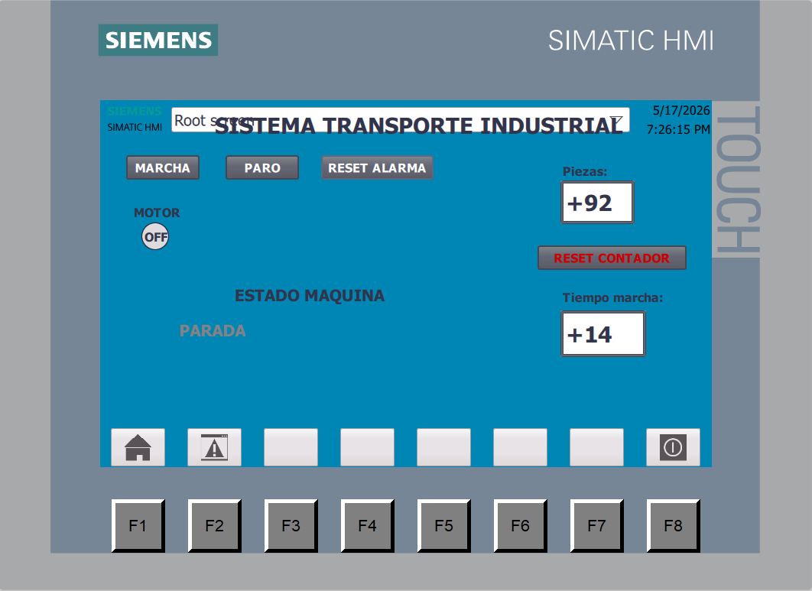
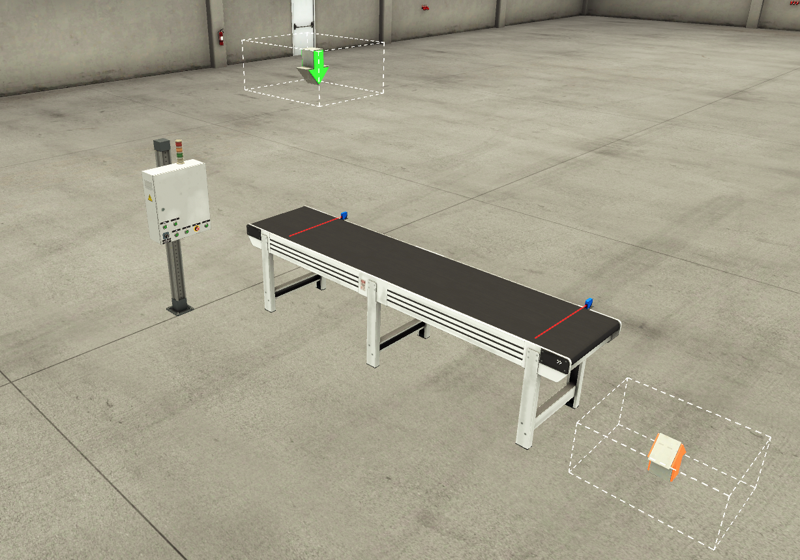
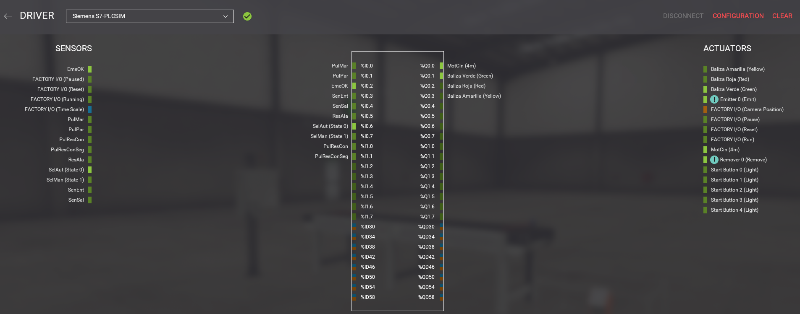
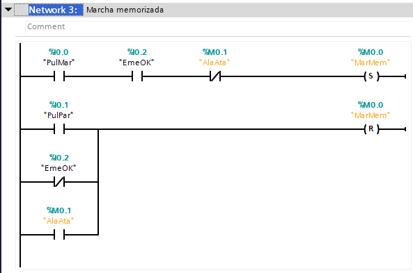
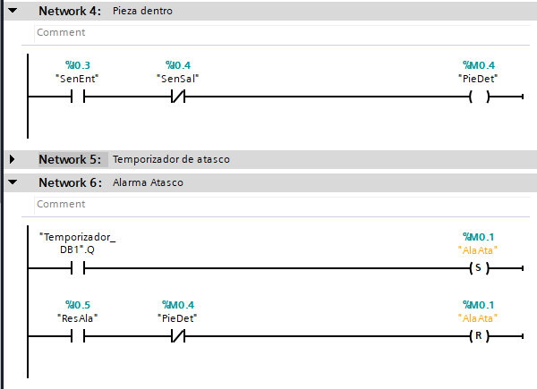
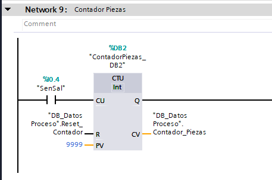
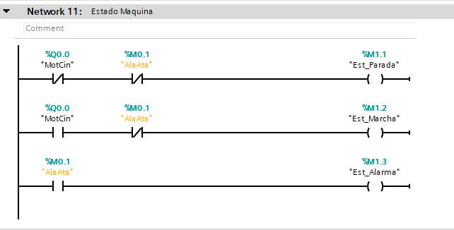
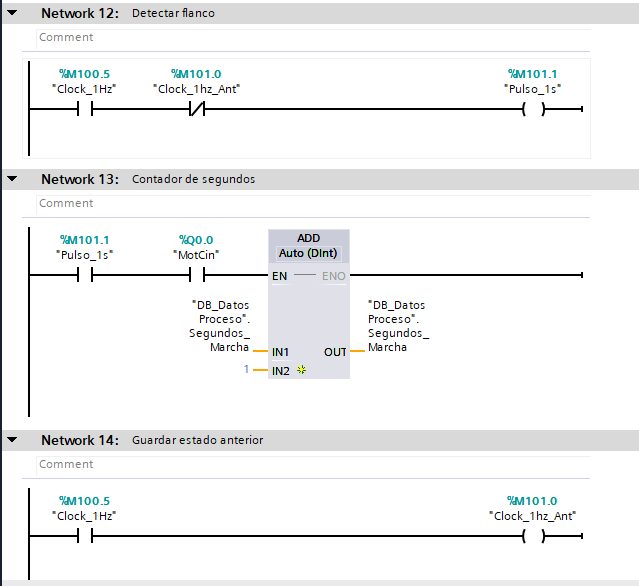
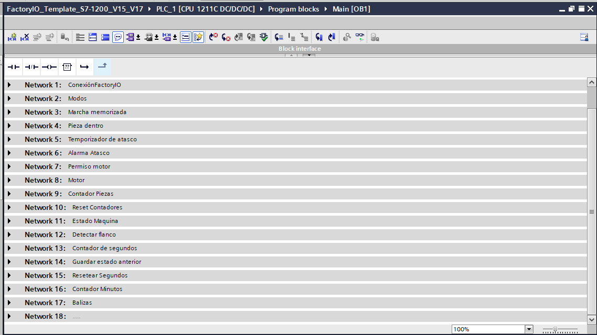
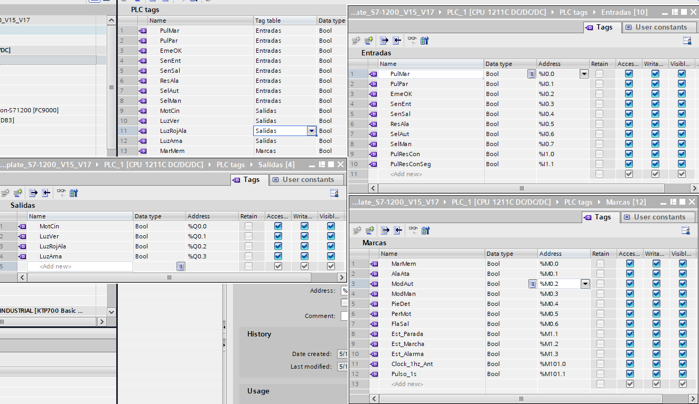

PLC / HMI / Simulación industrial
Cinta Transportadora Industrial
Sistema automatizado de transporte de piezas desarrollado con TIA Portal, PLC Siemens S7-1200, HMI KTP700 Basic y simulación 3D en Factory I/O.
TIA Portal
PLC Siemens S7-1200
Ladder
HMI Siemens
PLCSIM
Factory I/O
Resumen del proyecto
Este proyecto reproduce una aplicación típica de automatización industrial: el control de una cinta transportadora con detección de piezas, contador de producción, estados de máquina, alarmas por atasco y supervisión desde una pantalla HMI.
La lógica fue programada en Ladder dentro de TIA Portal y validada con PLCSIM, HMI Runtime y Factory I/O para simular el comportamiento de una instalación real.
Problema industrial
En una línea de producción es necesario transportar piezas de forma segura, detectar si una pieza queda bloqueada y ofrecer al operador información clara sobre el estado de la máquina.
Este proyecto resuelve ese problema mediante una lógica de control robusta, señalización visual, contador de piezas y alarma automática si una pieza no llega al sensor de salida dentro del tiempo esperado.
Arquitectura del sistema
Factory I/O → PLCSIM → PLC S7-1200 → HMI Runtime → Alarmas y contadores
Factory I/O genera las señales de sensores y actuadores. El PLC procesa la lógica de control, activa el motor de la cinta y comunica el estado del sistema al HMI.
Funciones implementadas
- Marcha y paro de cinta mediante pulsadores.
- Selector de modo manual y automático.
- Memoria de marcha con enclavamiento lógico.
- Detección de pieza en entrada y salida.
- Alarma por atasco si la pieza no llega al sensor de salida.
- Contador de piezas producidas.
- Reset independiente de alarma y contador.
- Estados de máquina: parada, en marcha y alarma.
- Tiempo total de marcha usando Clock Memory del PLC.
- Visualización completa desde HMI Siemens.
Demo del sistema
Simulación de la cinta transportadora con Factory I/O, HMI Runtime y lógica PLC ejecutándose en PLCSIM.
Interfaz HMI y simulación 3D



Lógica de control en TIA Portal






Variables y señales utilizadas

Resultados obtenidos
- Sistema completo PLC + HMI + simulación 3D funcionando.
- Control de cinta transportadora desde pulsadores físicos y HMI.
- Visualización en tiempo real de producción y estado de máquina.
- Detección automática de atasco con parada de seguridad.
- Proyecto documentado y preparado para portfolio industrial.
Próximas mejoras
- Registrar producción y alarmas en una base de datos SQL.
- Conectar el PLC con Node-RED mediante OPC UA o S7.
- Crear un dashboard en Grafana con KPIs de producción.
- Añadir histórico de alarmas y tiempos de parada.
- Calcular disponibilidad, rendimiento y OEE básico.